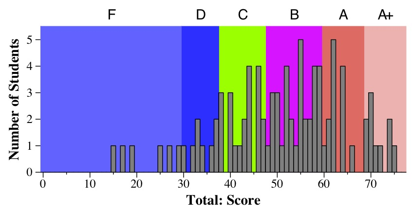
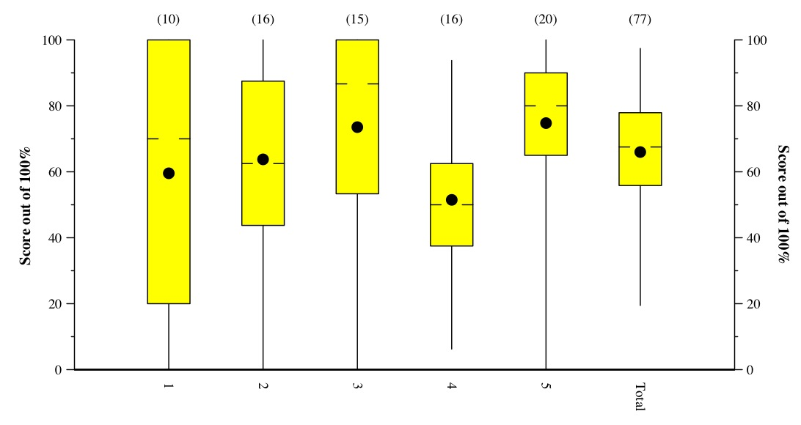

CS140 Final Exam: Spring, 2014
If you are studying for future exams using this exam, I highly recommend
printing everything, and doing the exam timed with no study guides. That's
the best preparation for duplicating your mental and emotional state during
the exam.
Scores
This was a challenging exam, no doubt because of the high number of
multiple choice questions. Unfortunately for y'all, that's an artifact of
having such high enrollments.
Here's the mapping of test scores to grades:
- 69 - 77: A+
- 60 - 69: A
- 48 - 60: B
- 38 - 48: C
- 30 - 38: D
- Below 30: F

Tukey Plots:
Lines go to min & max. The box is from the first quartile to the third quartile.
The hash marks denote the median. The dot denotes the mean.
